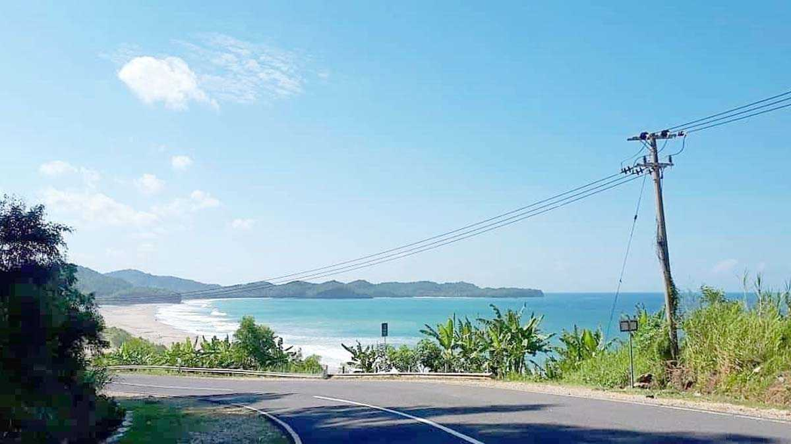
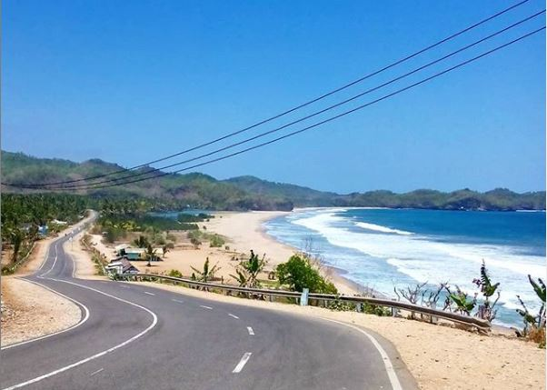
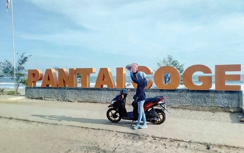

Pacitan Kota seribu satu goa itulah julukan untuk Kota yang berada di sisi barat daya provinsi Jawa Timur. Kota Pacitan memiliki destinasi wisata yang cukup menarik. Pantai dan Goa menjadi salah satu destinasi wisata Favorit wisatawan lokal maupun mancanegara. Seiring dengan pembangunan infrastruktur jalan di kota Pacitan, kini banyak bermunculan pantai-pantai baru di Pacitan yang bisa Anda kunjungi salah satunya yaitu Pantai Soge. Pantai Soge adalah salah satu wisata Pantai yang ada di pesisir Kabupaten Pacitan yang memiliki pesona alam yang cukup menarik wisatawan.
Dengan hamparan pasir yang membentang luas serta lokasi pantai yang berada persis di pinggir Jalan Lintas Selatan (JLS) menjadi salah satu daya tarik utama Pantai Soge. Di Pantai Soge ini juga terdapat sebuah danau kecil yang di tumbuhi dengan beberapa pohon kelapa serta rerumputan hijau yang bisa Anda gunakan untuk beristirahat sembari menikmati pemandangan di sekiatar Pantai. Danau ini terbentuk akibat air laut yang tidak sepenuhnya tertarik ke tengah laut di saat ombak sedang pasang surut dan terpisah akibat gundukan pasir yang ada di tepian pantai tersebut. Selain keindahan alam yang ada di pantai ini, masih ada satu lagi yang menjadi daya tarik wisatawan yaitu adanya jembatan dengan kontruksi pipa lengkung yang unik, Jembatan tersebut bernama Jembatan Soge.
Jembatan Soge di bangun di Desa Sidomulyo, Kecamatan Ngadirojo. Jembatan ini merupakan dampak dari adanya pembangunan insfraktruktur jalan yang menghubungkan ke dua Kabupaten yaitu Pacitan dan Trenggalek. Jembatan Soge menjadi tempat rekreasi baru bagi keluarga dan anak-anak muda. Dari Jembatan Soge inilah Anda bisa menyaksikan keindahan muara sungai yang terhubung langsung ke laut. Tak sedikit wisatawan yang berada di tempat ini memanfaatkan moment dengan mengabadikan pesona Jembatan Soge dengan cara berfoto-foto. Namun yang harus Anda ketahui yaitu Jembatan ini ramai akan lalu lalang kendaraan yang lewat sehingga Anda di harapkan berhati-hati di saat berfoto-foto di tempat ini.
Foto lain ditempat ini.
Temukan lokasi tempatnya.
Copyright © MyPacitan. All Right Reserved